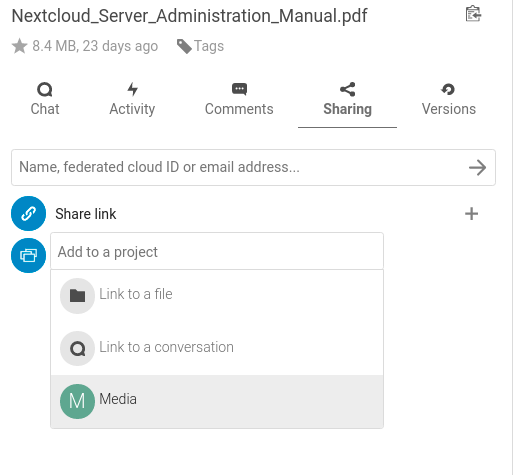

Projektowanie
Niezalecane od wersji 25: This feature was replaced by the shipped related resources app.
Użytkownicy mogą łączyć ze sobą pliki, czaty i inne elementy w projektach. Różne aplikacje będą prezentować te elementy na liście, umożliwiając użytkownikom natychmiastowe przejście do nich. Projekty są szerokie w Nextcloud. Gdy użytkownik udostępnia plik będący częścią projektu, odbiorca udostępnienia może również zobaczyć ten projekt. Kliknięcie dowolnego elementu projektu prowadzi bezpośrednio do niego, czatu, pliku albo zadania.
Utwórz nowy projekt
Nowy projekt można utworzyć, łącząc ze sobą dwa elementy. Zacznij od otwarcia paska bocznego udostępniania plików lub katalogów.

Kliknij Dodaj do projektu i wybierz typ elementu, który chcesz połączyć z bieżącym plikiem/katalogiem. Otworzy się selektor umożliwiający na przykład wybranie rozmowy Talk.

Po wybraniu elementu tworzony jest nowy projekt i wyświetlany na karcie udostępniania na pasku bocznym. Ten sam projekt pojawi się również na pasku bocznym udostępniania połączonych elementów.

Pozycja listy zawiera szybkie łącza do ograniczonej liczby elementów. Otwierając menu kontekstowe, można zmienić nazwę projektu i rozszerzyć pełną listę elementów.
Dodawanie kolejnych wpisów do projektu
Jeśli do już istniejącego projektu ma zostać dodany kolejny element, można to zrobić, wyszukując nazwę projektu w selektorze Dodaj do projektu.

Widoczność projektów
Projekty nie wpływają na dostęp i widoczność różnych elementów. Użytkownicy będą widzieć projekty innych użytkowników tylko wtedy, gdy mają dostęp do wszystkich zawartych w nich elementów.